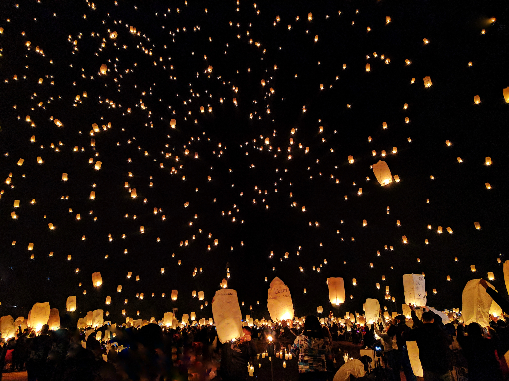
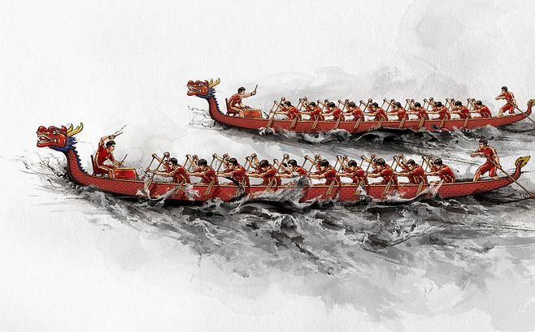
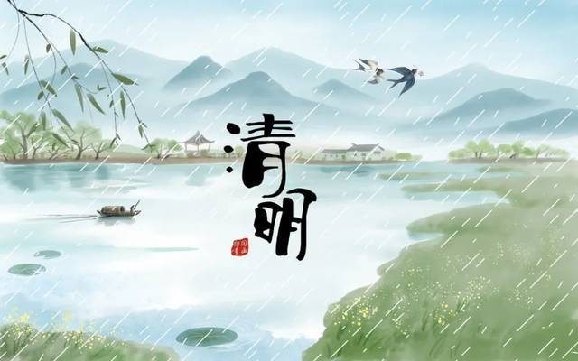
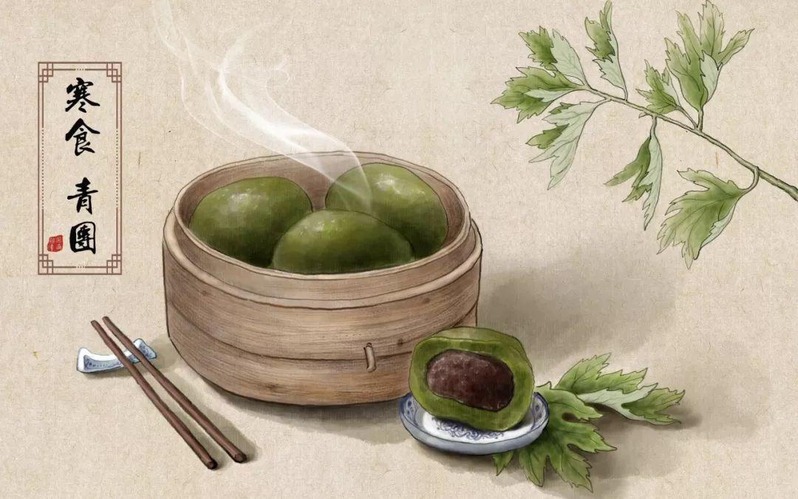
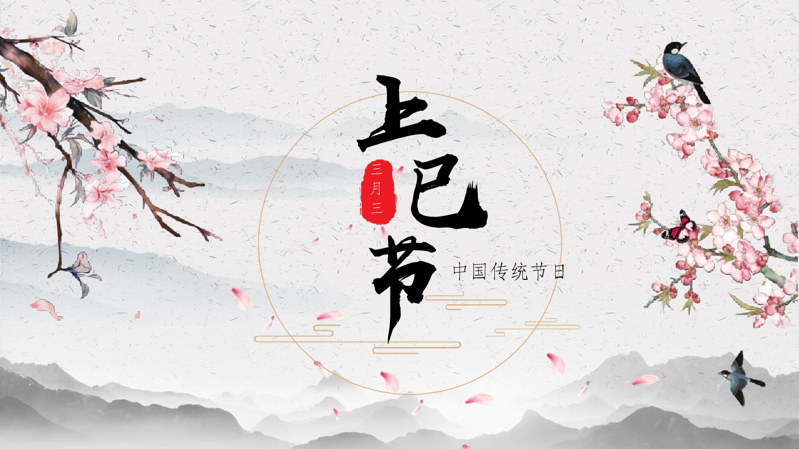
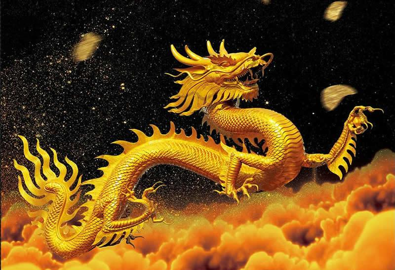

CUSTOM
-

孔明灯
孔明灯，又叫天灯，俗称许愿灯、祈天灯，是一种古老的汉族手工艺品。 孔明灯在古代，多做军事用途。现代人放孔明灯，多作为祈福之用。男女老少亲手写下祝福的心愿， 象征丰收成功，幸福每一年。 孔明灯一般在元宵节，中秋节等重大节日施放。
-

饺子
饺子是一种历史悠久的中国民间吃食，吃饺子也是国人在春节时特有的民俗传统。 因为取“更岁交子”之意，所以深受老百姓的欢迎。每逢新春佳节，饺子更成为一种必不可少的佳肴。在许多汉族地区民俗中的 ， 除夕守岁吃“饺子”，是任何山珍海味所无法替代的重头大宴。饺子起源于张仲景的时代，“饺子”又名“交子”或者“娇耳”， 是新旧交替之意，也是秉承上苍之意，是必须要吃的一道大宴美食.
-

龙舟
龙舟，是端午节竞渡用的龙形船。赛龙舟是汉族传统节日端午节的主要习俗， 最初是中国人民祛病防疫的节日，江浙地区春秋之前有在农历五月初五以龙舟竞渡形式举行龙图腾祭祀的习俗； 后因诗人屈原在这一天逝世，便成了中国汉族人民纪念屈原的传统节日习俗，也是汉族龙图腾文化的代表之一 。 春秋战国时期，龙舟竞渡盛行于吴国、越国、楚国 ， 后来在我国南方沿海一带也十分流行，传出国外后，深受各国人民的喜爱并形成了国际比赛。
-

清明
清明节，又称踏青节、行清节、三月节、祭祖节等，节期在仲春与暮春之交。 清明节源自上古时代的祖先信仰与春祭礼俗，兼具自然与人文两大内涵，既是自然节气点，也是传统节日。 扫墓祭祖与踏青郊游是清明节的两大礼俗主题，这两大传统礼俗主题在中国自古传承，至今不辍。
-
七夕
七夕节，又称七巧节、七姐节、女儿节、乞巧节、七娘会、七夕祭、牛公牛婆日、巧夕等， 是中国民间的传统节日。七夕节由星宿崇拜衍化而来，为传统意义上的七姐诞，因拜祭“七姐”活动在七月七晩上举行，故名“七夕”。 拜七姐，祈福许愿、乞求巧艺、坐看牵牛织女星、祈祷姻缘、储七夕水等，是七夕的传统习俗。经历史发展， 七夕被赋予了“牛郎织女”的美丽爱情传说，使其成为了象征爱情的节日，从而被认为是中国最具浪漫色彩的传统节日， 在当代更是产生了“中国情人节”的文化含义。
-

寒食节
寒食为旧俗中流行于我国北方的一个节日，古时日期并不固定， 有说在清明节前一天，也有另一种说法是清明前两天。现大多和清明节过。
-

上巳节
上巳（sì）节，俗称三月三，是汉民族的传统节日，该节日在汉代以前定为三月上旬的巳日， 后来固定在夏历三月初三。上巳节的历史由来已久，在上古时代上巳已成为大规模的民俗节日，春和景明，人们走出家门， 集于水边，举行清除不祥的祓除仪式。 上巳节是古代举行“祓除畔浴”活动中最重要的节日，人们结伴去水边沐浴，称为“祓禊”， 此后又增加了祭祀宴饮、曲水流觞、郊外游春等内容。上古时代以“干支”纪日，三月上旬的第一个巳日，谓之“上巳”。魏晋以后， 上巳节改为阴历三月初三，故又称“重三”或“三月三”。宋代以后，三月三上巳节在北方销声匿迹，不见于文献记载； 虽宋朝以后“三月三”上巳节不见于文献记载，但在南方的西南部分地区依旧流传。
-

龙抬头
龙抬头（农历二月初二），又称春耕节、农事节、青龙节、春龙节等， 是中国民间传统节日。“龙”指的是二十八宿中的东方苍龙七宿星象，每岁仲春卯月（斗指正东）之初， “龙角星”就从东方地平线上升起，故称“龙抬头”。龙抬头日在仲春卯月初，“卯”五行属木，卦象为“震”； 九二在临卦互震里，表示龙离开了潜伏的状态，已出现于地表上，崭露头角，为生发之大象。在农耕文化中， “龙抬头”标示着阳气生发，雨水增多，万物生机盎然，春耕由此开始。自古以来人们亦将龙抬头日作为一个祈求风调雨顺、驱邪攘灾、纳祥转运的日子。 “龙抬头”虽有着久远的历史源头，出现在文献上将龙抬头与节俗联系在一起是在元代后。
-
冬至
冬至，又称日短至、冬节、亚岁、拜冬等，兼具自然与人文两大内涵， 既是二十四节气中一个重要的节气，也是中国民间的传统节日。冬至是四时八节之一，被视为冬季的大节日， 在古代民间有“冬至大如年”的讲法，所以古人称冬至为“亚岁”或“小年”。冬至习俗因地域不同而又存在着习俗内容或细节上的差异。 在中国南方沿海部分地区，有冬至祭祖、宴饮的习俗；在中国北方地区，每年冬至日有吃饺子的习俗。